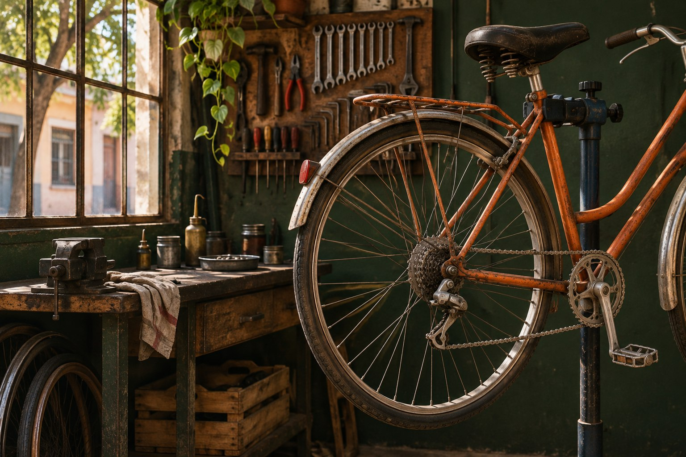

Frenos
Revisión del frenado y ajuste de los componentes según el estado de la bici.
Taller de bicicletas · Proyecto escolar
Conocé qué revisamos en tu bici y qué información conviene tener antes de consultar.
Ver servicios
Elegí un tipo de trabajo para ver las opciones.
Revisión del frenado y ajuste de los componentes según el estado de la bici.
Revisión de la cubierta y reparación o cambio de la cámara según el daño.
Revisión de cambios, frenos y presión de las ruedas para el uso cotidiano.
El taller revisa la bicicleta y confirma el costo según el trabajo y los repuestos antes de empezar.
Indicá qué tipo de bici tenés, qué falla notaste y desde cuándo pasa.
La demo genera un texto para copiar. La disponibilidad se confirma con el taller.
Completá los datos para armar un mensaje. La página no envía ni guarda información.